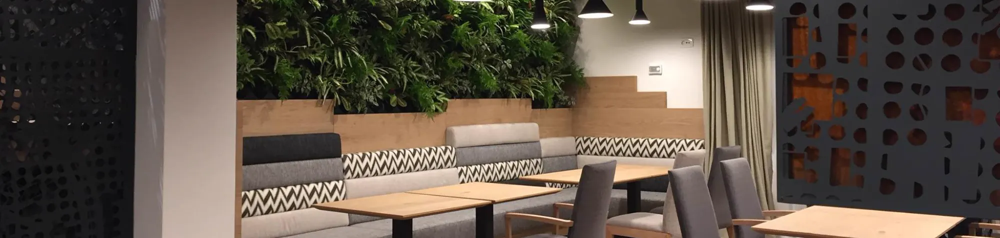
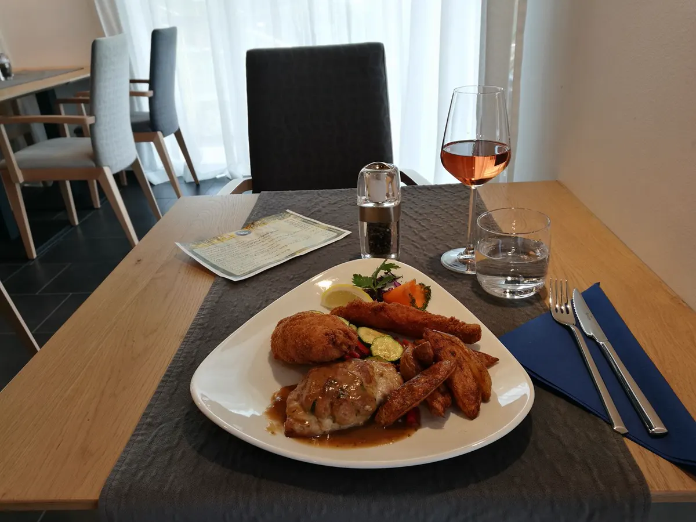
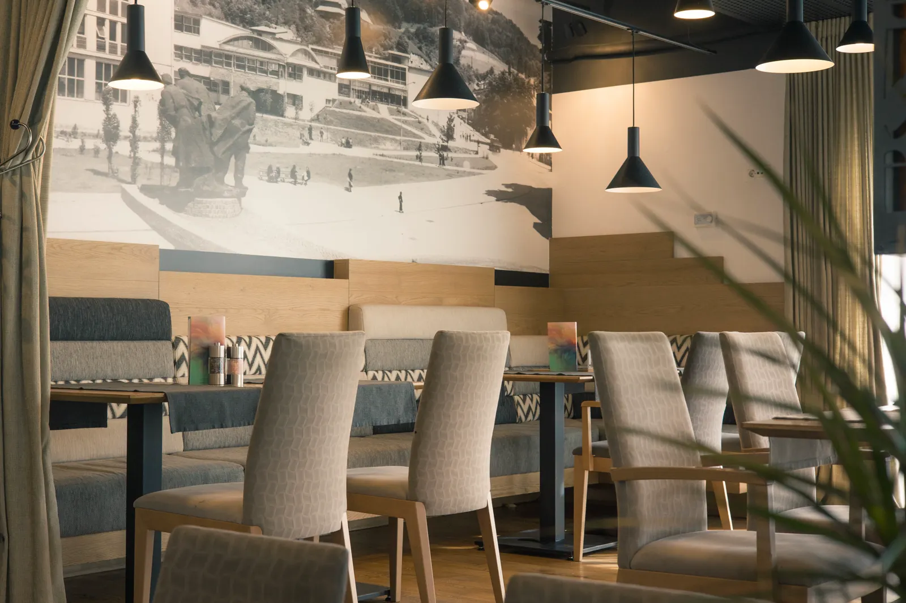

Sveži K5
Naše jedi pripravljamo sproti in iz izbranih sestavin, le tako lahko okusite razliko.
Ob delovnih dneh sveže malice, ob vikendih in praznikih kosila.
Rudarska cesta 8a, Trbovlje
Ob delovnih dneh sveže malice, ob vikendih in praznikih kosila. Od pic in testenin, mesnih in brezmesnih jedi do ribjih specialitet. Po dogovoru pripravimo tudi poseben meni, prilagojen vam.

Tako svojo kuhinjo opisujejo sami: sveže, gurmansko in sladko.
Naše jedi pripravljamo sproti in iz izbranih sestavin, le tako lahko okusite razliko.
Ob delovnih dneh sveže malice, ob vikendih in praznikih kosila.
Artistično sestavljeni krožniki, ki dopolnijo izvrsten okus skrbno izbranih in pripravljenih jedi.
Hladne predjedi, rižote, jedi z žara, ribe in plošče za dve osebi.
Torte, sladice, kremne rezine in ostale dobrote lastne proizvodnje. Omamno dobro.
Za posladek po kosilu ali kar tako, ob kavi v kavarni.


Vsak delovni dan pestra izbira dnevnih malic.
Aktualne malice tega tedna objavljajo na svoji Facebook strani. Pokličite in naročite.

Dvorana v nadstropju restavracije nudi udobje zasebnosti za vašo zabavo, za večje ali manjše skupine.
Ločen prostor je primeren tudi za sestanke in poslovna srečanja ob kosilu ali kavi.
Povprašajte po terminu

Od organizacije do izvedbe: hrana, pijača in postrežba. Po dogovoru organizirajo postrežbo na pikniku, sestanku, poslovnem srečanju, rojstnem dnevu, poroki ali zabavi.
Restavracija & kavarna K5 je poslovna enota družbe AGM Nemec d.o.o., Marno 44, 1431 Dol pri Hrastniku.